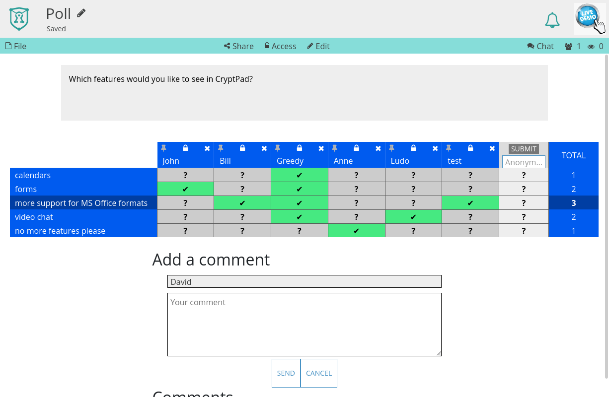

Umfrage¶
Die Umfrage-Anwendung ist dafür gedacht, kleinen Gruppen die Entscheidung etwa auf ein Datum oder eine Uhrzeit für ein Treffen zu erleichtern, deren Mitglieder sich gegenseitig vertrauen.
Sie ist nicht für Umfragen mit einer großen Anzahl von Personen oder für Situationen geeignet, in denen die Sicherheit der Abstimmungen wichtig ist. Um abstimmen zu können, muss jeder Benutzer die Bearbeitungsrechte für das Dokument haben. Dies ermöglicht es jedem Teilnehmer, Antworten von anderen Teilnehmern zu ändern und/oder zu löschen.
Eine Überarbeitung dieser Anwendung ist für Ende 2020 geplant.
Werkzeugleiste¶
Bearbeiten: Wechselt zum Bearbeitungsmodus, um Änderungen der Umfragebeschreibung und Antwortoptionen zu ermöglichen.
Veröffentlichen: Speichert die Umfragebeschreibung und Antwortoptionen.
Im Bearbeitungsmodus:
Werkzeuge: Blendet die Werkzeugleiste für den Texteditor ein/aus.
Einfügen: Fügt ein Bild zur Umfragebeschreibung hinzu. Das Bild kann aus dem CryptDrive ausgewählt oder hochgeladen werden. Eingeloggte Benutzer
Bearbeitungsmodus¶
In der Umfragenbeschreibung kann Markdown verwendet werden. Benutze Einfügen, um Bilder hinzuzufügen.
Antwortoptionen werden auf der linken Seite der Tabelle hinzugefügt. Um eine Option hinzuzufügen:
Füge einen Titel zum Feld "Option" hinzu.
Klickeauf oderEnter.
Um eine Option zu ändern, Klicke auf ✐ rechts des Titels. Um eine Option zu löschen, Klicke auf links des Titels.
Abstimmung¶
Jede Stimme wird in einer Spalte der Ergebnistabelle protokolliert. Um eine Stimme hinzuzufügen:
Gib einen Namen im Titel der Spalte ein.
Klickein eine Zelle, um zwischen den Optionen zu wechseln:
✔ Ja
~ Vielleicht
✖ Nein
Klickeauf Bestätigen im Spaltenkopf, um die Stimmen zu speichern und zur Auswertung hinzuzufügen.
Verwende , um eine Spalte zu entsperren und Name und Stimmen zu ändern. Verwende , um die Spalte zu sperren.
Um ein Kommentar zur Umfrage hinzuzufügen:
Schreibe deinen Kommentar in das mit "Dein Kommentar" beschriftete Feld.
Senden
Export¶
.csv